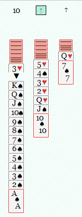

HOW TO PLAY SPIDER SOLITAIRE
|
Click or tap card you would like to move
| → |
Stack cards in descending order. Face down cards are automatically revealed.
|
|
Suits do not matter for stacking, however...
| → |
...you can move a stack only if the suits match
|
|
If there is an empty space...
| → |
...you can place any card or stack in it

|
|
Once a stack is built King to Ace in the same suit, select the King ...
 | → |
...and then select the button at the top (the foundation)
|
|
Hit the deck when you are out of moves or just want more cards, but be careful not to go too quickly or you may run out of options too soon.
| ||
|
Hint: if you see an option to do so, re-organize your stacks by matching suits
|
~ ~ ~ ~ ~ ~ ~ ~ ~ ~ ~ ~ ~ ~ ~
Game Modes
|
Classic: The eight "legs" of a spider would be the 8 different sets you will need to stack to win the game. King does not stack on top of any other card but can be moved to empty space. Tarantula: King stacks on top of Ace. Player is less likely to get stuck. Spiderette: Version using one deck. Quick and challenging. Will o' wisp: Invented by Geoffrey Mott-Smith. Same as Spiderette except different. 9legs: My "invention." Hard mode only has 3 suits (hearts, spades, and bells) and 3 decks, so "9 legs." There are also 9 columns making stacking choices a bit more difficult. No face down cards and King stacks on Ace. Player should plan carefully. For fun challenge deal all cards right at start. It's a good idea to start on classic mode and easy. |
.